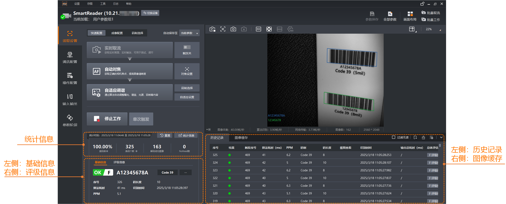
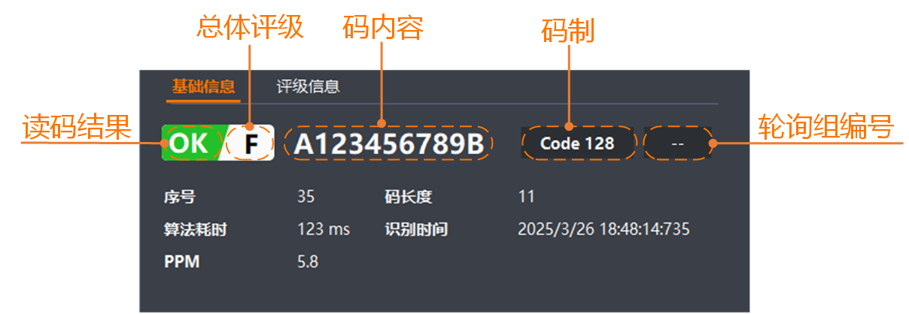

单击读取设置的开始工作或单次触发后，读码器开始取流并读码，还支持查看历史记录、统计信息等。

开始工作下方的统计信息，可查看读码器当前采图过程中的读码情况。
|
信息名称 |
说明 |
|---|---|
|
读码率 |
统计当前采集过程中，解码成功的图像数占所有图像数的百分比。 |
|
条码个数 |
统计当前采集过程中，共成功读取到多少个条码或二维码。 |
|
解码成功图像 |
统计当前采集过程中，共有几张图像解码成功。 |
|
NoRead数 |
统计当前采集过程中，共有几张图像未成功读到码。 |
如您想查看更详细的统计信息，可单击右上角的进入统计数据。此处会显示当前及历史的读码统计信息以及读码率的整体趋势。鼠标选中读码率的折线图，通过滚轮可放大或缩小折线图的横坐标。
单击右上角的可重置统计信息。
历史记录区可查看本次采集过程中每帧图像的读码情况。
通过历史记录区右上角的相关按钮可实现以下功能。
过滤无读：勾选后可将NoRead的结果过滤掉。
：可导出当前区域的所有历史记录信息。
使用该功能前，需先通过菜单栏设置的历史记录导出完成相关参数设置。
：可清空当前的历史记录信息。
：可调整显示的信息类型。
历史记录区可显示的信息类型为：序号、结果、触发序号、码内容、轮询组编号、算法耗时(ms)、PPM、码制、码长度、触发时间、抠图查看、识别时间、输出总耗时(ms)、总体评估、图像清晰度、丢包数。
下表仅对部分可显示的信息类型做介绍。
|
信息名称 |
说明 |
|---|---|
|
结果 |
读码成功时，显示绿色圆点；读码失败时，显示红色圆点。 |
|
PPM |
指一维码或二维码中每个模块所需的像素数。 |
|
抠图查看 |
物流读码器开启抠图使能时，单击具体数据抠图列的查看可预览对应的面单图像。 |
|
总体评估 |
显示对应的打码评级等级，单击具体数据总体评估列的评级报告可弹框显示具体的评级报告。 说明
需确保已打开读码器的打码评级功能。 评级报告中包含设备基本信息、条码或二维码的图片、读码结果以及评级的质量等级和得分等信息。
|
主界面的统计信息下方默认显示读码的基础信息。
此处默认显示最新一次读码结果的基础信息。历史记录区选中不同的记录时，此处会切换为对应记录的基础信息。
具体显示的信息如下图所示。

总体评级仅在打开读码器的打码评级功能后方可显示。
若读码器打开打码评级功能且输出的结果中带评级信息，则通过基础信息的右侧可切换具体的查看评级信息。
此处和基础信息的显示逻辑相同。默认显示最新一次读码结果的评级信息。历史记录区选中不同的记录时，此处会切换为对应记录的评级信息。
评级信息主要显示总体评级、评级标准、以及各个评级库对应的等级和得分。
单击评级标准右侧的可跳转至操作配置的打码评级界面进行相关参数的调整。
IDMVS取流时会在图像缓存区显示本机PC上实时缓存的若干张最新图像数据，用于查看历史触发帧是否读码成功。单击选中缓存图像小图，即可在图像预览区查看读码结果。
缓存的图像张数由缓存数量参数控制。与读码器的单次触发帧计数参数无关。假设：缓存数量为10，单次触发帧计数为2，则缓存最近5次触发的10张图像。